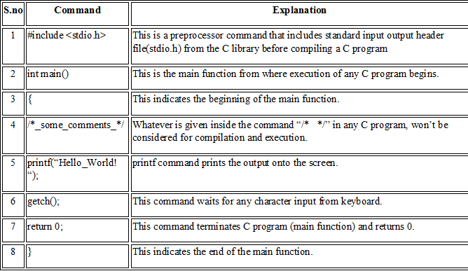

C Introduction
Introduction
The C programming language is a structure oriented
programming language,developed at Bell Laboratories in
1972 by Dennis Ritchie.
C programming language features were derived from
an earlier language called“B” (Basic Combined Programming
Language – BCPL).
C language was invented for implementing UNIX
operating system.
In 1978, Dennis Ritchie and Brian Kernighan published
the first edition“The C Programming Language” and commonly
known as K&R C.
In 1983, the American National Standards Institute (ANSI)
established a committee to provide a modern, comprehensive
definition of C. The resulting definition,the ANSI standard,
or “ANSI C”, was completed late 1988.
How to install C
There are many compilers available for c and c++.
Here, we are going to use Turbo C++.
To install the Turbo C software.
1. Download Turbo C++.
2. Create turboc directory inside c drive and
extract the tc3.zip inside c:\turboc.
3. Double click on install.exe file
4. Click on the tc application file located inside
c:\TC\BIN to write the c program.
How to compile and run the c program
There are 2 ways to compile and run the c program.
By menu
Now click on the compile menu then compile sub menu to compile
the c program.Then click on the run menu then run sub menu
to run the c program.
By shortcut
Or, press ctrl+f9 keys compile and run the program directly.
C Basic Program:
#include <stdio.h>
int main()
{
/* Our first simple C basic program */
printf(“Hello World! “);
getch();
return 0;
}A C program basically consists of the following parts−
